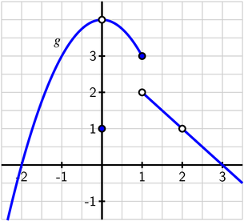
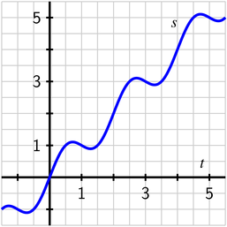
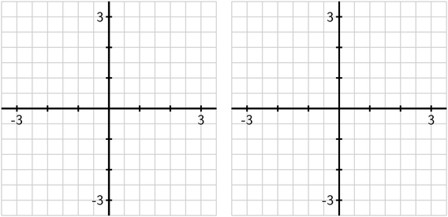

{In this section, we strive to understand the ideas generated by the following important questions:
What is the mathematical notion of limit and what role do limits play in the study of functions?
What is the meaning of the notation \(\ds \lim_{x \to a} f(x) = L\)?
How do we go about determining the value of the limit of a function at a point?
How does the notion of limit allow us to move from average velocity to instantaneous velocity?
}
Subsection1.2.1Introduction
Functions are at the heart of mathematics: a function is a process or rule that associates each individual input to exactly one corresponding output. Students learn in courses prior to calculus that there are many different ways to represent functions, including through formulas, graphs, tables, and even words. For example, the squaring function can be thought of in any of these ways. In words, the squaring function takes any real number \(x\) and computes its square. The formulaic and graphical representations go hand in hand, as \(y = f(x) = x^2\) is one of the simplest curves to graph. Finally, we can also partially represent this function through a table of values, essentially by listing some of the ordered pairs that lie on the curve, such as \((-2,4)\), \((-1,1)\), \((0,0)\), \((1,1)\), and \((2,4)\).
Functions are especially important in calculus because they often model important phenomena – the location of a moving object at a given time, the rate at which an automobile is consuming gasoline at a certain velocity, the reaction of a patient to the size of a dose of a drug – and calculus can be used to study how these output quantities change in response to changes in the input variable. Moreover, thinking about concepts like average and instantaneous velocity leads us naturally from an initial function to a related, sometimes more complicated function. As one example of this, think about the falling ball whose position function is given by \(s(t) = 64 - 16t^2\) and the average velocity of the ball on the interval \([1,x]\). Observe that
Now, two things are essential to note: this average velocity depends on \(x\) (indeed, \(AV_{[1,x]}\) is a function of \(x\)), and our most focused interest in this function occurs near \(x = 1\), which is where the function is not defined. Said differently, the function \(g(x) = \frac{16 - 16x^2}{x-1}\) tells us the average velocity of the ball on the interval from \(t = 1\) to \(t = x\), and if we are interested in the instantaneous velocity of the ball when \(t = 1\), we'd like to know what happens to \(g(x)\) as \(x\) gets closer and closer to \(1\). At the same time, \(g(1)\) is not defined, because it leads to the quotient \(0/0\).
This is where the idea of limits comes in. By using a limit, we'll be able to allow \(x\) to get arbitrarily close, but not equal, to \(1\) and fully understand the behavior of \(g(x)\) near this value. We'll develop key language, notation, and conceptual understanding in what follows, but for now we consider a preliminary activity that uses the graphical interpretation of a function to explore points on a graph where interesting behavior occurs.
Preview Activity
Suppose that \(g\) is the function given by the graph below. Use the graph to answer each of the following questions.
Determine the values \(g(-2)\), \(g(-1)\), \(g(0)\), \(g(1)\), and \(g(2)\), if defined. If the function value is not defined, explain what feature of the graph tells you this.
For each of the values \(a = -1\), \(a = 0\), and \(a = 2\), complete the following sentence: “As \(x\) gets closer and closer (but not equal) to \(a\), \(g(x)\) gets as close as we want to .”
What happens as \(x\) gets closer and closer (but not equal) to \(a = 1\)? Does the function \(g(x)\) get as close as we would like to a single value?
Figure1.2.1Graph of \(y = g(x)\) for Preview Activity .
Subsection1.2.2The Notion of Limit
Limits can be thought of as a way to study the tendency or trend of a function as the input variable approaches a fixed value, or even as the input variable increases or decreases without bound. We put off the study of the latter idea until further along in the course when we will have some helpful calculus tools for understanding the end behavior of functions. Here, we focus on what it means to say that “a function \(f\) has limit \(L\) as \(x\) approaches \(a\).” To begin, we think about a recent example.
In Preview Activity , you saw that for the given function \(g\), as \(x\) gets closer and closer (but not equal) to 0, \(g(x)\) gets as close as we want to the value 4. At first, this may feel counterintuitive, because the value of \(g(0)\) is \(1\), not \(4\). By their very definition, limits regard the behavior of a function arbitrarily close to a fixed input, but the value of the function at the fixed input does not matter. More formally 1 What follows here is not what mathematicians consider the formal definition of a limit. To be completely precise, it is necessary to quantify both what it means to say “as close to \(L\) as we like” and “sufficiently close to \(a\).” That can be accomplished through what is traditionally called the epsilon-delta definition of limits. The definition presented here is sufficient for the purposes of this text., we say the following.
Definition1.2.2
Given a function \(f\), a fixed input \(x = a\), and a real number \(L\), we say that \(f\) has limit\knownindex{\lt main>limit\lt /main>\lt sub>definition\lt /sub>} \(L\) as \(x\) approaches \(a\), and write
\[
\lim_{x \to a} f(x) = L
\]
provided that we can make \(f(x)\) as close to \(L\) as we like by taking \(x\) sufficiently close (but not equal) to \(a\). If we cannot make \(f(x)\) as close to a single value as we would like as \(x\) approaches \(a\), then we say that \(f\) does not have a limit as \(x\) approaches \(a\).
For the function \(g\) pictured in Figure 1.2.1, we can make the following observations:
but \(g\) does not have a limit as \(x \to 1\). When working graphically, it suffices to ask if the function approaches a single value from each side of the fixed input, while understanding that the function value right at the fixed input is irrelevant. This reasoning explains the values of the first three stated limits. In a situation such as the jump in the graph of \(g\) at \(x = 1\), the issue is that if we approach \(x = 1\) from the left, the function values tend to get as close to 3 as we'd like, but if we approach \(x = 1\) from the right, the function values get as close to 2 as we'd like, and there is no single number that all of these function values approach. This is why the limit of \(g\) does not exist at \(x = 1\).
For any function \(f\), there are typically three ways to answer the question “does \(f\) have a limit at \(x = a\), and if so, what is the limit?” The first is to reason graphically as we have just done with the example from Preview Activity . If we have a formula for \(f(x)\), there are two additional possibilities: (1) evaluate the function at a sequence of inputs that approach \(a\) on either side, typically using some sort of computing technology, and ask if the sequence of outputs seems to approach a single value; (2) use the algebraic form of the function to understand the trend in its output as the input values approach \(a\). The first approach only produces an approximation of the value of the limit, while the latter can often be used to determine the limit exactly. The following example demonstrates both of these approaches, while also using the graphs of the respective functions to help confirm our conclusions.
For each of the following functions, we'd like to know whether or not the function has a limit at the stated \(a\)-values. Use both numerical and algebraic approaches to investigate and, if possible, estimate or determine the value of the limit. Compare the results with a careful graph of the function on an interval containing the points of interest.
From the left table, it appears that we can make \(f\) as close as we want to 3 by taking \(x\) sufficiently close to \(-1\), which suggests that \(\ds \lim_{x \to -1} f(x) = 3\). This is also consistent with the graph of \(f\). To see this a bit more rigorously and from an algebraic point of view, consider the formula for \(f\): \(f(x) = \frac{4-x^2}{x+2}\). The numerator and denominator are each polynomial functions, which are among the most well-behaved functions that exist. Formally, such functions are continuous 2 See Section 1.7 for more on the notion of continuity., which means that the limit of the function at any point is equal to its function value. Here, it follows that as \(x \to -1\), \((4-x^2) \to (4 - (-1)^2) = 3\), and \((x+2) \to (-1 + 2) = 1\), so as \(x \to -1\), the numerator of \(f\) tends to 3 and the denominator tends to 1, hence \(\ds \lim_{x \to -1} f(x) = \frac{3}{1} = 3\).
The situation is more complicated when \(x \to -2\), due in part to the fact that \(f(-2)\) is not defined. If we attempt to use a similar algebraic argument regarding the numerator and denominator, we observe that as \(x \to -2\), \((4-x^2) \to (4 - (-2)^2) = 0\), and \((x+2) \to (-2 + 2) = 0\), so as \(x \to -2\), the numerator of \(f\) tends to 0 and the denominator tends to 0. We call \(0/0\) an indeterminate form\knownindex{\lt main>indeterminate\lt /main>} and will revisit several important issues surrounding such quantities later in the course. For now, we simply observe that this tells us there is somehow more work to do. From the table and the graph, it appears that \(f\) should have a limit of \(4\) at \(x = -2\). To see algebraically why this is the case, let's work directly with the form of \(f(x)\). Observe that
At this point, it is important to observe that since we are taking the limit as \(x \to -2\), we are considering \(x\) values that are close, but not equal, to \(-2\). Since we never actually allow \(x\) to equal \(-2\), the quotient \(\frac{2+x}{x+2}\) has value 1 for every possible value of \(x\). Thus, we can simplify the most recent expression above, and now find that
\[
\lim_{x \to -2} f(x) = \lim_{x \to -2} 2-x.
\]
Because \(2-x\) is simply a linear function, this limit is now easy to determine, and its value clearly is \(4\). Thus, from several points of view we've seen that \(\ds\lim_{x \to -2} f(x) = 4.\)
Next we turn to the function \(g\), and construct two tables and a graph.
First, as \(x \to 3\), it appears from the data (and the graph) that the function is approaching approximately \(0.866025\). To be precise, we have to use the fact that \(\frac{\pi}{x} \to \frac{\pi}{3}\), and thus we find that \(g(x) = \sin(\frac{\pi}{x}) \to \sin(\frac{\pi}{3})\) as \(x \to 3\). The exact value of \(\sin(\frac{\pi}{3})\) is \(\frac{\sqrt{3}}{2}\), which is approximately 0.8660254038. Thus, we see that
\[
\lim_{x \to 3} g(x) = \frac{\sqrt{3}}{2}.
\]
As \(x \to 0\), we observe that \(\frac{\pi}{x}\) does not behave in an elementary way. When \(x\) is positive and approaching zero, we are dividing by smaller and smaller positive values, and \(\frac{\pi}{x}\) increases without bound. When \(x\) is negative and approaching zero, \(\frac{\pi}{x}\) decreases without bound. In this sense, as we get close to \(x = 0\), the inputs to the sine function are growing rapidly, and this leads to wild oscillations in the graph of \(g\). It is an instructive exercise to plot the function \(g(x) = \sin\left(\frac{\pi}{x}\right)\) with a graphing utility and then zoom in on \(x = 0\). Doing so shows that the function never settles down to a single value near the origin and suggests that \(g\) does not have a limit at \(x = 0\).
How do we reconcile this with the righthand table above, which seems to suggest that the limit of \(g\) as \(x\) approaches \(0\) may in fact be \(0\)? Here we need to recognize that the data misleads us because of the special nature of the sequence \(\{0.1, 0.01, 0.001, \ldots\}\): when we evaluate \(g(10^{-k})\), we get \(g(10^{-k}) = \sin\left(\frac{\pi}{10^{-k}}\right) = \sin(10^k \pi) = 0\) for each positive integer value of \(k\). But if we take a different sequence of values approaching zero, say \(\{0.3, 0.03, 0.003, \ldots\}\), then we find that
That sequence of data would suggest that the value of the limit is \(\frac{\sqrt{3}}{2}\). Clearly the function cannot have two different values for the limit, and this shows that \(g\) has no limit as \(x \to 0\).
\hspace{5.0in}
An important lesson to take from Example 1.2.3 is that tables can be misleading when determining the value of a limit. While a table of values is useful for investigating the possible value of a limit, we should also use other tools to confirm the value, if we think the table suggests the limit exists.
Estimate the value of each of the following limits by constructing appropriate tables of values. Then determine the exact value of the limit by using algebra to simplify the function. Finally, plot each function on an appropriate interval to check your result visually.
Expand the expression \((2+x)^3\) using the rule \((a+b)^3 = a^3 + 3a^2b + 3ab^2 + b^3\), and then combine like terms in the numerator.
Try multiplying the given function by this fancy form of 1: \(\frac{\sqrt{x+1} + 1}{\sqrt{x+1} + 1}\). Expand and simplify the numerator, and then see what happens as \(x \to 0\).
This concludes a rather lengthy introduction to the notion of limits. It is important to remember that our primary motivation for considering limits of functions comes from our interest in studying the rate of change of a function. To that end, we close this section by revisiting our previous work with average and instantaneous velocity and highlighting the role that limits play.
Subsection1.2.3Instantaneous Velocity
Suppose that we have a moving object whose position at time \(t\) is given by a function \(s\). We know that the average velocity of the object on the time interval \([a,b]\) is \(AV_{[a,b]} = \frac{s(b)-s(a)}{b-a}.\) We define the instantaneous velocity \knownindex{\lt main>instantaneous velocity\lt /main>} at \(a\) to be the limit of average velocity as \(b\) approaches \(a\). Note particularly that as \(b \to a\), the length of the time interval gets shorter and shorter (while always including \(a\)). In Section 1.3, we will introduce a helpful shorthand notation to represent the instantaneous rate of change. For now, we will write \(IV_{t=a}\) for the instantaneous velocity at \(t = a\), and thus
Again, the most important idea here is that to compute instantaneous velocity\knownindex{\lt main>instantaneous velocity\lt /main>}, we take a limit of average velocities as the time interval shrinks. Two different activities offer the opportunity to investigate these ideas and the role of limits further.
Using the expression just found in (a) with \(h = 0.2\), \(AV_{[3,3.2]} = 6 + 0.2 = 6.2\) meters/min.
Taking the limit of average velocity and using our work from (a), we find that
\[
IV_{t = 3} = \lim_{h \to 0} AV_{[3, 3+h]} = \lim_{h \to 0} 6+h = 6,
\]
so the instantaneous velocity of the object when \(t = 3\) is 6 meters per minute.
The closing activity of this section asks you to make some connections among average velocity, instantaneous velocity, and slopes of certain lines.
For the moving object whose position \(s\) at time \(t\) is given by the graph below, answer each of the following questions. Assume that \(s\) is measured in feet and \(t\) is measured in seconds.
Figure1.2.9Plot of the position function \(y = s(t)\) in Activity 1.2.8.
Use the graph to estimate the average velocity of the object on each of the following intervals: \([0.5,1]\), \([1.5,2.5]\), \([0,5]\). Draw each line whose slope represents the average velocity you seek.
How could you use average velocities or slopes of lines to estimate the instantaneous velocity of the object at a fixed time?
Use the graph to estimate the instantaneous velocity of the object when \(t = 2\). Should this instantaneous velocity at \(t = 2\) be greater or less than the average velocity on \([1.5,2.5]\) that you computed in (a)? Why?
Remember that average velocity on an interval computes the quotient of “change in \(s\) over change in \(t\).” This is the slope of the line between the corresponding two points on the graph of \(s\).
Think about shorter and shorter time intervals and drawing the lines whose slopes represent average velocity.
Think about zooming in on the graph at \(t = 2\) and drawing a line that, up close, looks just like the curve \(s(t)\). What is the approximate slope of that line?
Remember that average velocity on an interval computes the quotient of “change in \(s\) over change in \(t\).” This is the slope of the line between the corresponding two points on the graph of \(s\). For example, the average velocity on \([0.5,1]\) is \(\frac{1-1}{1-0.5} = 0\).
Think about shorter and shorter time intervals and drawing the lines whose slopes represent average velocity. If those lines' slopes are approaching a single number, that number represents the instantaneous velocity.
Think about zooming in on the graph at \(t = 2\) and drawing a line that, up close, looks just like the curve \(s(t)\). What is the approximate slope of that line? By drawing this line that looks like \(s(t)\) near the point \((2,s(2))\) and comparing the line through the points \((1.5,s(1.5))\) and \((2.5, s(2.5))\), you should be able to compare the lines and see which has greater slope.
The average velocity on \([0.5,1]\) is the slope of the line joining the points \((0.5,s(0.5))\) and \((1,s(1))\), which is \(AV_{[0.5,1]} = \frac{1-1}{1-0.5} = 0\). On \([1.5,2.5]\), we similarly find \(AV_{[1.5,2.5]} = \frac{3-1}{2.5-1.5} = 2\), and on \([0,5]\), we have \(AV_{[0,5]} = \frac{5-0}{5-0} = 1\).
Take shorter and shorter time intervals and draw the lines whose slopes represent average velocity. If those lines' slopes are approaching a single number, that number represents the instantaneous velocity. For example, to estimate the instantaneous velocity at \(t = 2\), we might consider average velocities on \([2,3]\), \([2,2.5]\), and \([2,2.25]\).
If we draw the line through \((2,2)\) and \((2.1,s(2.1))\), it looks like the line's slope is approximately 2.5: if we go over one grid-width, we appear to go up about 2.5. The slope of this line is clearly greater than the slope of the line through \((1.5, s(1.5))\) and \((2.5, s(2.5))\), which is 2. Hence the instantaneous velocity at \(t = 2\) is greater than the average velocity on \([1.5,2.5]\).
\begin{authornote}
This is an author note.
\end{authornote}
\item Limits enable us to examine trends in function behavior near a specific point. In particular, taking a limit at a given point asks if the function values nearby tend to approach a particular fixed value.
\item When we write \(\ds \lim_{x \to a} f(x) = L\), we read this as saying “the limit of \(f\) as \(x\) approaches \(a\) is \(L\),” and this means that we can make the value of \(f(x)\) as close to \(L\) as we want by taking \(x\) sufficiently close (but not equal) to \(a\).
\item If we desire to know \(\ds \lim_{x \to a} f(x)\) for a given value of \(a\) and a known function \(f\), we can estimate this value from the graph of \(f\) or by generating a table of function values that result from a sequence of \(x\)-values that are closer and closer to \(a\). If we want the exact value of the limit, we need to work with the function algebraically and see if we can use familiar properties of known, basic functions to understand how different parts of the formula for \(f\) change as \(x \to a\).
\item The instantaneous velocity of a moving object at a fixed time is found by taking the limit of average velocities of the object over shorter and shorter time intervals that all contain the time of interest.
\hrulefill
\begin{exercises}
\item Consider the function whose formula is \(\ds f(x) = \frac{16-x^4}{x^2-4}\).
What is the domain of \(f\)?
Use a sequence of values of \(x\) near \(a = 2\) to estimate the value of \(\ds \lim_{x \to 2} f(x),\)
if you think the limit exists. If you think the limit doesn't exist, explain why.
Use algebra to simplify the expression \(\frac{16-x^4}{x^2-4}\) and hence work to evaluate \(\lim_{x \to 2} f(x)\) exactly, if it exists, or to explain how your work shows the limit fails to exist. Discuss how your findings compare to your results in (b).
True or false: \(f(2) = -8\). Why?
True or false: \(\frac{16-x^4}{x^2-4} = -4-x^2.\) Why? How is this equality connected to your work above with the function \(f\)?
Based on all of your work above, construct an accurate, labeled graph of \(y = f(x)\) on the interval \([1,3]\), and write a sentence that explains what you now know about \(\ds \lim_{x \to 2} \frac{16-x^4}{x^2-4}\).
\item Let \(\ds g(x) = -\frac{|x+3|}{x+3}\).
What is the domain of \(g\)?
Use a sequence of values near \(a = -3\) to estimate the value of
\(\lim_{x \to -3} g(x),\)
if you think the limit exists. If you think the limit doesn't exist, explain why.
Use algebra to simplify the expression \(\frac{|x+3|}{x+3}\) and hence work to evaluate \(\lim_{x \to -3} g(x)\) exactly, if it exists, or to explain how your work shows the limit fails to exist. Discuss how your findings compare to your results in (b). (Hint: \(|a| = a\) whenever \(a \ge 0\), but \(|a| = -a\) whenever \(a \lt 0\).)
True or false: \(g(-3) = -1\). Why?
True or false: \(-\frac{|x+3|}{x+3} = -1.\) Why? How is this equality connected to your work above with the function \(g\)?
Based on all of your work above, construct an accurate, labeled graph of \(y = g(x)\) on the interval \([-4,-2]\), and write a sentence that explains what you now know about \(\ds \lim_{x \to -3} g(x)\).
\item For each of the following prompts, sketch a graph on the provided axes of a function that has the stated properties.
Figure1.2.10Axes for plotting \(y = f(x)\) in (a) and \(y = g(x)\) in (b).
At \(x = -2, -1, 1\) and \(2\), \(g\) has a limit, and its limit equals the value of the function at that point.
\(g(0)\) is not defined and \(\ds \lim_{x \to 0} g(x)\) does not exist.
\item A bungee jumper dives from a tower at time \(t=0\). Her height \(s\) in feet at time \(t\) in seconds is given by \(s(t) = 100\cos(0.75t) \cdot e^{-0.2t}+100\).
Write an expression for the average velocity of the bungee jumper on the interval \([1,1+h]\).
Use computing technology to estimate the value of the limit as \(h \to 0\) of the quantity you found in (a).
What is the meaning of the value of the limit in (b)? What are its units?